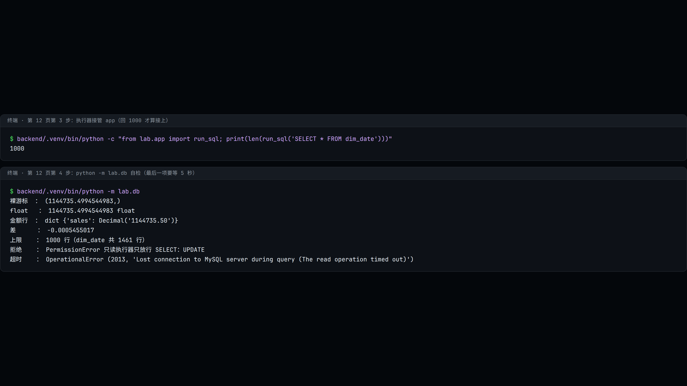

练本 · 阅读版（md 正典派生，改内容请改 manual/page-12.md）
第 12 页 · 换真执行器：给临时通道装上四道闸
前置：第 0 页备好环境；本页接第 11 页的
lab/app.py和第 10 页的fixtures/dw-real.sql。不用启动服务。
这一页构建什么
把第 7 页那条裸 pymysql 临时通道换成一个执行器 lab/db.py：行是 dict、Decimal 原样交出来、没写 LIMIT 自动补 1000、5 秒不回就断、非 SELECT 拒绝。
类型问题：换上它，dw-real 的 410 行带分金额在十进制下 SUM 得 1144735.50，不再是 1144735.4994544983。
口径提醒：这仍是第 10 页的 naive 口径，本页只证明 FLOAT→DECIMAL 的类型问题，不代表数据已洗。
猜一猜
- 裸
SELECT SUM(order_amount) FROM fact_order（第 10 页的 naive 口径）和十进制值1144735.50差多少——0、0.0005、还是 5 元？ dim_date一共 1461 行。执行器自动补LIMIT 1000后，SELECT * FROM dim_date回几行——1000 还是 1461？
动手
第 1 步：把真数据灌回库（命令都在仓库根目录执行：有 fixtures/、backend/ 的那一层）。
为什么灌 dw-real：第 10 页收尾时你重灌回了演示集（115 行），带分金额的 dw-real 才看得出漂移，用第 10 页同一条命令：
docker exec -i lab-mysql mysql -uroot -plabpass --default-character-set=utf8mb4 < fixtures/dw-real.sql
第 2 步：新建 lab/db.py，把下面整段粘进去，Ctrl+S 保存：
# lab/db.py —— 最小只读执行器：一条 SQL 只过四道闸
import re
from pathlib import Path
import pymysql
import yaml
ROOT = Path(__file__).resolve().parents[1]
POLICY = yaml.safe_load((ROOT / "contracts" / "sql.policy.yaml").read_text(encoding="utf-8"))
LIMIT = POLICY["limits"]["default_limit"] # 闸 2：上限 1000，从契约读
CONNECT_TIMEOUT_S = POLICY["timeout"]["connect_timeout_s"] # 闸 3：建连 5s，从契约读
READ_TIMEOUT_S = POLICY["timeout"]["max_execution_time_ms"] / 1000 # 闸 3：读 5s（5000ms），从契约读
def query(sql: str) -> list[dict]:
if not sql.lstrip().upper().startswith("SELECT"): # 闸 4：只读
raise PermissionError(f"只读执行器只放行 SELECT：{sql.split()[0]}")
if not re.search(r"\bLIMIT\b", sql, re.I): # 闸 2：自动补 LIMIT
sql = sql.rstrip().rstrip(";") + f" LIMIT {LIMIT}"
conn = pymysql.connect(host="127.0.0.1", port=3307, user="root",
password="labpass", database="dw",
cursorclass=pymysql.cursors.DictCursor, # 闸 1：dict 行
connect_timeout=CONNECT_TIMEOUT_S, read_timeout=READ_TIMEOUT_S)
try:
with conn.cursor() as cur:
cur.execute(sql)
return list(cur.fetchall()) # 闸 1：Decimal 原样返回，不转 float
finally:
conn.close()
if __name__ == "__main__":
from decimal import Decimal
raw = pymysql.connect(host="127.0.0.1", port=3307, user="root",
password="labpass", database="dw").cursor()
raw.execute("SELECT SUM(order_amount) FROM fact_order")
print("裸游标 ：", raw.fetchone())
bad = query("SELECT SUM(order_amount) AS sales FROM fact_order")[0]["sales"]
row = query("SELECT CAST(SUM(CAST(order_amount AS DECIMAL(16,2))) AS DECIMAL(16,2)) AS sales FROM fact_order")[0]
print("float ：", repr(bad), type(bad).__name__)
print("金额行 ：", type(row).__name__, row)
print("差 ：", Decimal(str(bad)) - row["sales"])
print("上限 ：", len(query("SELECT * FROM dim_date")), "行（dim_date 共 1461 行）")
for tag, sql in (("拒绝 ：", "UPDATE fact_order SET order_amount = 0"),
("超时 ：", "SELECT SLEEP(10)")):
try:
query(sql)
except Exception as e:
print(tag, type(e).__name__, e)
第 3 步：让它接管 app。 打开 lab/app.py：import 区加一行 from lab import db；再把第 7 页的 run_sql（def run_sql 到 conn.close() 共 10 行）换成下面两行，改完 Ctrl+S 保存。
当场露馅：不保存，下一条验证会当场露馅。换完立刻从仓库根跑验证，确认 app.py 真的用上了执行器：
def run_sql(sql: str) -> list[dict]:
return db.query(sql)
backend/.venv/bin/python -c "from lab.app import run_sql; print(len(run_sql('SELECT * FROM dim_date')))"
# 回 1000 才算接上：dim_date 共 1461 行，执行器补 LIMIT 1000；旧 run_sql 会回 1461，报 ModuleNotFoundError 说明不在仓库根
第 4 步：跑自检。 文件末尾的 if __name__ 把四道闸和你猜的两个数一次打出来（这条整体要等 5 秒多，最后一项是超时，别以为卡住）：
backend/.venv/bin/python -m lab.db
你应该看到
裸游标 ： (1144735.4994544983,)
float ： 1144735.4994544983 float
金额行 ： dict {'sales': Decimal('1144735.50')}
差 ： -0.0005455017
上限 ： 1000 行（dim_date 共 1461 行）
拒绝 ： PermissionError 只读执行器只放行 SELECT：UPDATE
超时 ： OperationalError (2013, 'Lost connection to MySQL server during query (The read operation timed out)')

对账
- 猜 1：差 -0.0005455017，不到一分钱，所以看着像对的。
- 证据在类型和位数：float 印成
1144735.4994544983（10 位小数），真实金额只该有 2 位；DECIMAL才是1144735.50。 - SQL 怎么写：金额要 DECIMAL 两位，SQL 里就得先逐值
CAST(order_amount AS DECIMAL(16,2))再SUM（自检里那条就是）；执行器只负责把它原样交出来。 - 尾巴哪来的：
order_amount的物理类型是FLOAT（第 2 页建表就写 FLOAT），二进制浮点存不下 0.01 的整数倍，MySQL 拿 DOUBLE 累加 408 个近似值，末尾就长出0.000545...的尾巴（尾数随 MySQL 版本可能略有不同，但一定不等于1144735.50，类型也一定是 float）。
- 证据在类型和位数：float 印成
- 猜 2：回 1000 行。执行器发现 SQL 里没有
LIMIT，就在末尾补LIMIT 1000。fact_order只有 410 行，上限在它身上看不出效果，要拿 1461 行的dim_date验证。 - 返回结构：第 7 页那段
run_sql自己在connect()里手写cursorclass=DictCursor；默认游标其实回 tuple（自检第一行(1144735.4994544983,)）。- 通道保证：执行器把这个参数收进自己的
connect()，rows[0]["sales"]从「调用方记得」变成「通道保证」；/api/query和/api/stream两处调用一行都不用改。
- 通道保证：执行器把这个参数收进自己的
- 四道闸各防什么：
- 只读防一条 SQL 把库写坏；
- LIMIT 防全表扫把几十万行拖进内存；
- 超时防慢查询把连接占死（自检最后一行要等 5 秒：
SLEEP(10)睡到第 5 秒被读超时掐掉）。 - 5 秒预算从契约读：建连读
timeout.connect_timeout_s: 5，读超时用timeout.max_execution_time_ms: 5000÷ 1000 折算；契约里timeout.read_timeout_s: 10是工业版 socket 兜底，Lab 版不用。 - DECIMAL / dict 防金额被浮点改掉、行被 tuple 吃掉。
- 工业版
ReadOnlyExecutor还多几样（一句带过）：连库前先用 AST 拒写语句 / 多语句 / UNION；连接只用一个在dw上只有 SELECT 权限的账号；错误只有一个出口（code+message+reason_code）。
你现在拥有：一条有边界的执行通道——一条 SQL 能不能跑、最多回多少行、跑多久、值是什么类型，四个边界都写在
lab/db.py这一处；第 7 页那条裸连接，从这里变成了系统里的执行层。
拆一刀
- 先拍快照：
scripts/lab save p12-before（名字只能用字母、数字、点、下划线、短横线，且必须以字母或数字开头；中文会被拒）。
白名单含 lab/：scripts/lab 的白名单现在含 lab/：lab/db.py、lab/app.py 也进快照，改代码同样能 reset 还原——所以第 2 步改契约不是为了「只能改契约」，而是为了证明上限来自契约（改 lab/db.py 里写死的 LIMIT 也能过自检，却测不出这个单源）。
2. 打开 contracts/sql.policy.yaml，把 limits: 下 # 明细查询默认最多返回多少行 那行的 default_limit: 1000 改成 100000。
上限来自契约：lab/db.py 里 LIMIT = POLICY["limits"]["default_limit"] 那一行就是从契约这里读上限——改契约这一行、执行器下次起进程就换上限，这才叫「上限来自契约」。
注意本页执行器只读 default_limit；max_limit 是工业版概念，这里没实现：别改下面 max_limit: 1000，只改它自检还是回 1000 行；而且 default_limit: 100000 已经比 max_limit: 1000 还大，工业版会当配置错误（默认上限不能超截断上限），本页不读它所以照样跑。
拆完什么样：Ctrl+S，再跑一次 backend/.venv/bin/python -m lab.db（这条同样要等 5 秒多，别以为卡死）：上限这道闸拆掉，1461 行全跑出来，上限 ： 1461 行（dim_date 共 1461 行）；其它几行不变，说明只拆了这一道闸。
3. 还原：scripts/lab reset p12-before --yes，末行 现在工作区与快照 "p12-before" 完全一致。；再跑一次，上限 ： 1000 行（dim_date 共 1461 行） 回来。